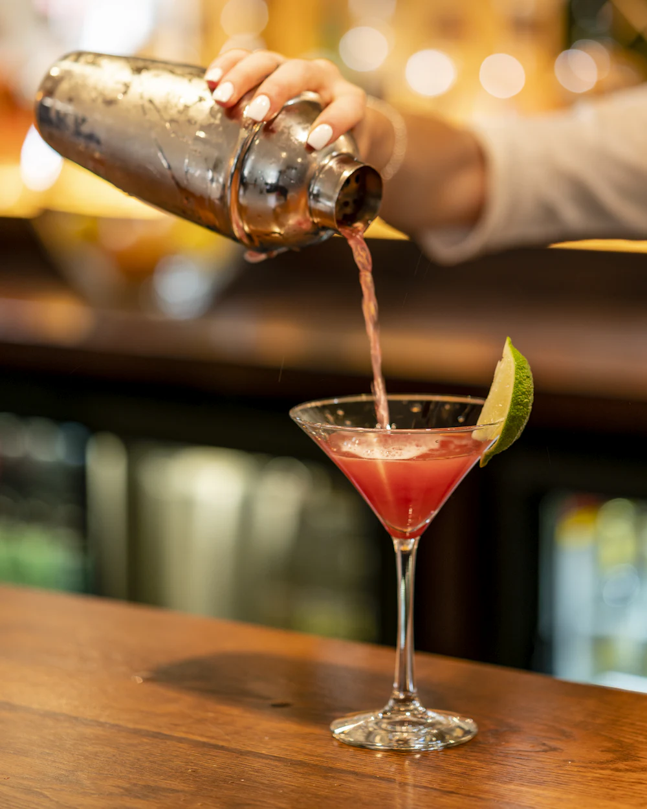
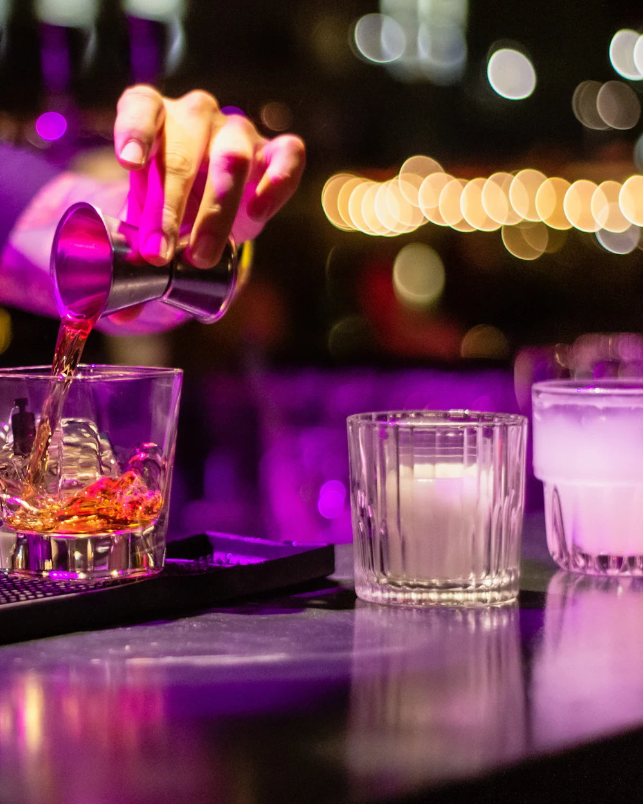
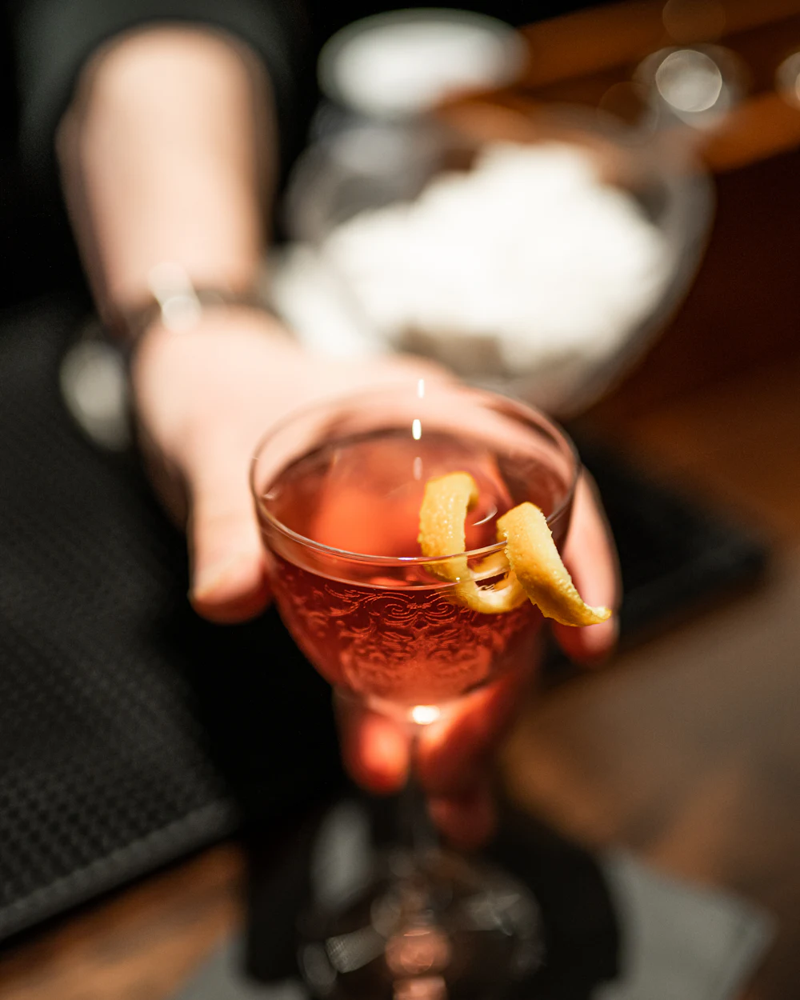

Cocktailbar · Sternschanze
Gute Drinks.
Lange Nächte.
Vierundzwanzig Plätze am Tresen, eine kleine Karte, die mit den Jahreszeiten wechselt, und keine Reservierungen. Kommen Sie einfach vorbei.
Die Bar
Ein kleiner Raum, ein langer Tresen und Zeit für jeden Gast.
Wir mixen klassisch und wiegen jede Zutat ab. Sirups, Bitters und das Ginger Beer setzen wir selbst an, Kräuter und Früchte kommen aus Hamburg und dem Alten Land. Wer keinen Alkohol trinkt, bekommt bei uns genauso viel Sorgfalt.
- HausgemachtSirups, Bitters und Ginger Beer
- Aus der RegionHolunder, Rhabarber, Äpfel, Minze
- Ohne AlkoholEigene Drinks statt nur Saft


Außerdem an der Bar
Klassiker
- Old Fashioned12 €
- Whiskey Sour12 €
- Daiquiri11 €
- Gin Fizz11 €
Ohne Alkohol
- Mineralwasser 0,3 l3 €
- Rhabarber-Tonic 0,3 l7 €
- Ingwer-Limonade, hausgemacht, 0,3 l6 €
- Apfel-Thymian-Schorle 0,3 l5 €
Bier, Wein & etwas zu knabbern
- Fassbier 0,3 l4,50 €
- Hauswein 0,2 l7 €
- Oliven mit Zitrone5 €
- Geröstete Mandeln4,50 €

Unter der Woche
Jeder Abend hat sein eigenes Tempo.
Dienstag
Neue Drinks
Die Crew probiert Rezepte für die nächste Karte. Sie trinken mit und entscheiden mit.
Donnerstag
Vinyl am Tresen
Ab 21 Uhr laufen Platten aus unserer Sammlung. Wünsche nehmen wir an der Bar entgegen.
Erster Mittwoch im Monat
Barkurs
Zwei Stunden vor dem Öffnen, drei Drinks und ein Shaker für zu Hause. Anmeldung an der Bar.
Besuch
Keine Reservierung. Einfach klingeln.
Die Plätze am Tresen vergeben wir an die, die da sind. Für Gruppen ab acht Personen rufen Sie bitte vorher an.
- Adresse
- Sternschanze, 20357 Hamburg
- Anfahrt
- U3 oder S-Bahn bis Sternschanze, dann drei Minuten zu Fuß
- Telefon
- 040 000 000 00
Öffnungszeiten
| Dienstag | 19 – 1 Uhr |
|---|---|
| Mittwoch | 19 – 1 Uhr |
| Donnerstag | 19 – 1 Uhr |
| Freitag | 19 – 3 Uhr |
| Samstag | 19 – 3 Uhr |
| Sonntag | Ruhetag |
| Montag | Ruhetag |
Ausschank nur an Gäste ab 18 Jahren.